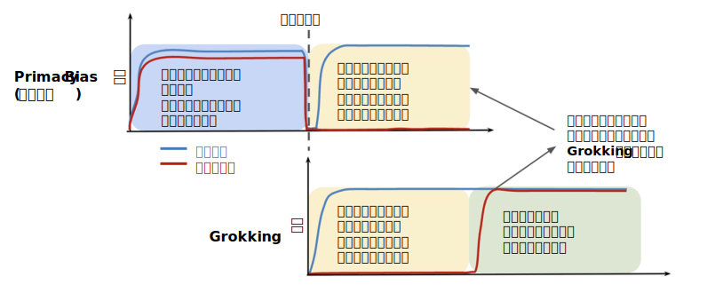

Grokking
最新項目へ
Grokking: Generalization beyond overfitting on small algorithmic datasets (2022)
グロッキング: 小規模アルゴリズムデータセットにおける過剰適合を超える汎化
最初に「グロッキング」現象を発見し、命名し、調査した論文。
論文はこちら
機械翻訳はこちら
要約はこちら
Grokking as the Transition from Lazy to Rich Training Dynamic (2023)
グロッキング：怠惰な訓練ダイナミクスから豊かな訓練ダイナミクスへの移行
ニューラルネットワークにおけるグロッキング現象を、初期の「怠惰な(lazy)」訓練フェーズから「豊かな(rich)」特徴学習フェーズへの移行として説明した。
論文はこちら
要約はこちら
Explaining grokking through circuit efficiency (2023)
回路効率を通じたグロッキングの解明
-
・「訓練データをそのまま記憶する回路」と「データの背後にある普遍的なパターンを学習する汎化回路」という、2種類の解法が存在する。
-
・記憶回路は学習が速い一方で非効率的であり、汎化回路は学習が遅いがより効率的
-
・学習の初期段階では、より早く形成される非効率な記憶回路が優位になるため、モデルは訓練データを暗記する。
-
・訓練が長期間続くにつれて、「重み減衰（weight decay）」などの効果により,効率的な汎化回路が徐々に形成され、最終的に記憶回路に取って代わる。この移行が完了したときに、モデルの汎化能力が劇的に向上し、Grokking として観察される
論文はこちら
要約はこちら
GROKKING AT THE EDGE OF NUMERICAL STABILITY (2025)
数値的安定性の限界を突き止める
-
・グロッキングなしで過剰適合するケースは、浮動小数点エラーが極端な値によって引き起こされる。これをソフトマックス崩壊 (SC) と呼ぶ 。
-
・SCを回避するための介入、例えば浮動小数点精度の向上や数値的に安定したSoftmaxの新しいバージョン（ステーブルマックス）、正規化なしではこれまで存在しなかった設定でグロッキングが発生する
-
・過剰適合と交差エントロピー損失がモデルを制御されていないロジット成長の方向に押し進めるため、 モデルがSCに近づくことがわる。これをナイーブ損失最小化（NLM）と呼ぶ
-
・新しい最適化手法によってNLMを回避できることを実証した(⟂Grad)
論文はこちら
要約はこちら
What Can Grokking Teach Us About Learning Under Nonstationarity? (2025)
非定常状態での学習について グロッキングから 何が学べるか?
グロッキングできれば、継続的に学習できる。

プライマシーバイアス（上段）とグロッキング（下段）はどちらも、特徴学習の欠如（黄色）によりネットワークの汎化能力が低下する期間を示す。プライマシーバイアスでは、これは初期トレーニングフェーズで学習した不適切な特徴（青）が原因である。グロッキングでは、ネットワークは最終的に特徴学習のダイナミクス（緑）を回復し、汎化能力を発揮する。
論文はこちら
機械翻訳はこちら
Flatness is Necessary, Neural Collapse is Not: Rethinking Generalization via Grokking (2025)
平坦性は必要だが、ニューラルコラプスは不要：グロッキングによる汎化の再考
ニューラルコラプスと損失ランドスケープの平坦性は理論的にも経験的にも汎化と結び付けられてきた。しかし、どちらの現象の因果関係も依然として不明だった。グロッキングを用いてこれらの疑問を解明した。 ニューラルコラプスと相対的平坦性はどちらも汎化の開始時に出現するが、平坦性のみが一貫して汎化を予測できることが分かった。
グロッキングが幾何学的基礎を分離するための強力なプローブとしてどのように機能するかを実証した。
論文はこちら
Egalitarian Gradient Descent: A Simple Approach to Accelerated Grokking (2025)
平等勾配降下法：加速グロッキングへのシンプルなアプローチ
・確率的勾配降下法の速度が、勾配の異なる主方向（すなわち、特異方向）に沿って非対称になることで、グロッキングが誘発されることを、経験的かつ理論的に示す。
・次に、勾配を正規化し、すべての主方向に沿ったダイナミクスが全く同じ速度で進化するようにする、単純な修正法を提案する。
・この修正法 (我々は平等主義勾配降下法（EGD）と呼び、自然勾配降下法を慎重に修正した形式と見なすことができる) が、はるかに高速にグロッキングすることを確立する。
論文はこちら
トップに戻る